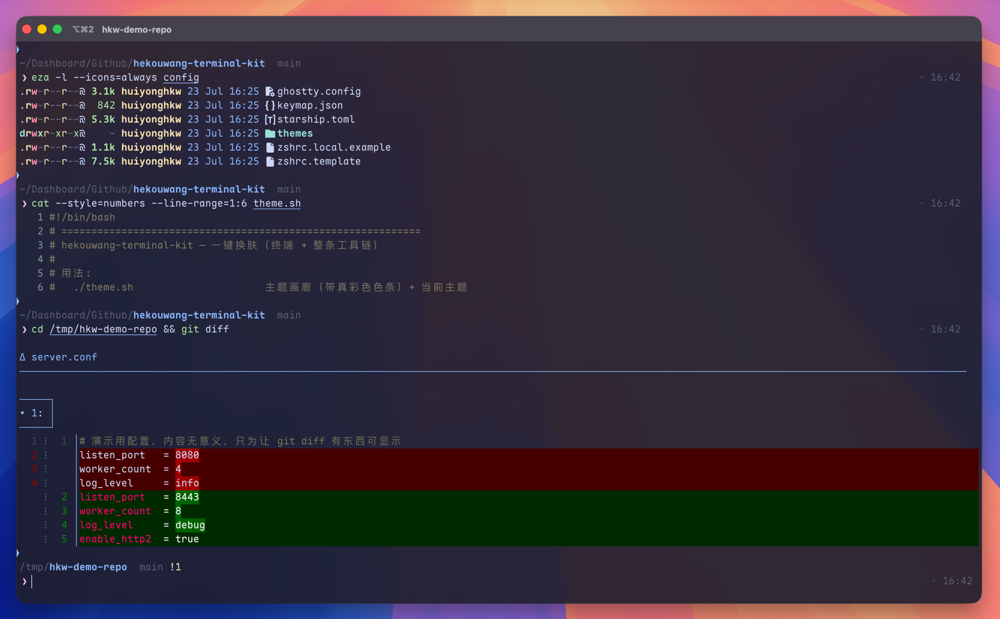
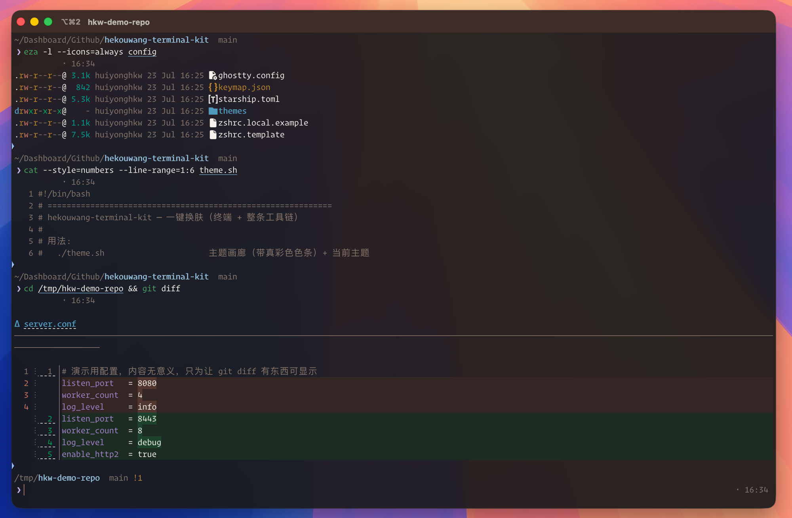
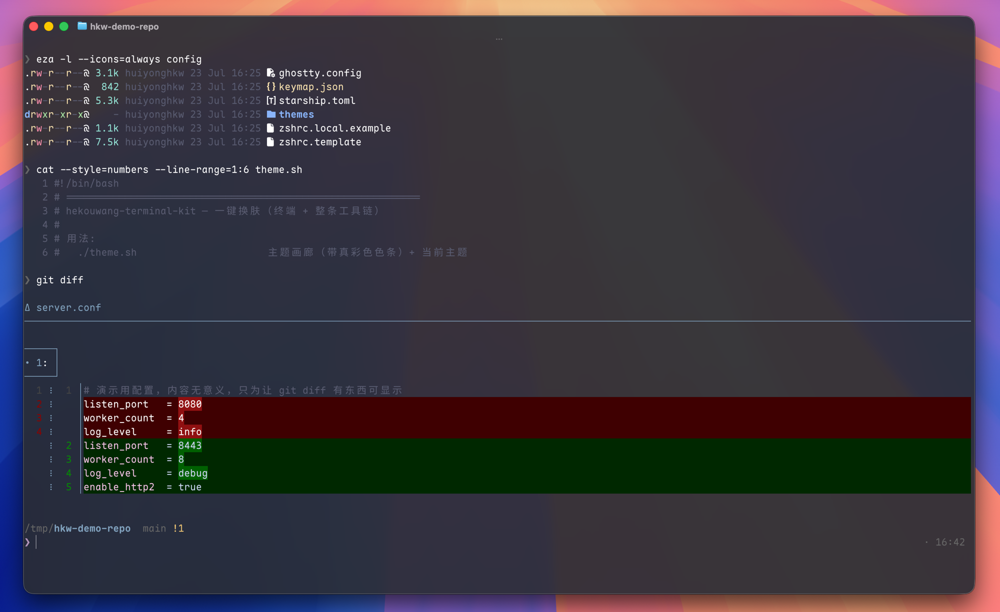
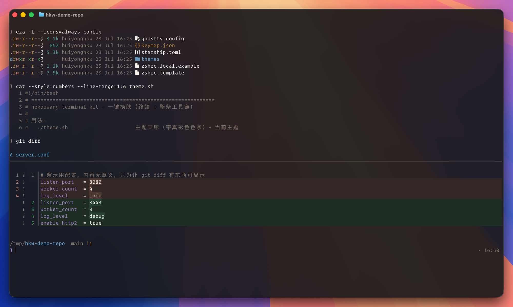

Same colors,
same look.
把「同色」做成
同观感。
OneLook — one palette, three layers: optical · scene · semantic. Free configures iTerm2. Paid makes that palette walk out. OneLook —— 一份色板，三层观感：光学 · 场景 · 语义。 免费版配好 iTerm2；付费版让这份色板走出去。
# open-source build · free · MIT开源版 · 免费 · MIT $ git clone https://github.com/huiyonghkw/hekouwang-terminal-kit $ cd hekouwang-terminal-kit && ./install.sh --dry-run $ ./install.sh ✓ changed your mind? ./uninstall.sh restores from backup后悔了？./uninstall.sh 从备份还原
macOS only. Ships no font files — detects what you already have. Paid build → 只支持 macOS。不分发字体 —— 探测本机已装字体。付费版 →
Why OneLook为什么选 OneLook
--dry-run, migrate your .zshrc, uninstall restores from backup — not delete-and-pray.--dry-run、迁移已有 .zshrc、卸载从备份还原 —— 不是删了拉倒。
Colors are derived, not copied. Hand-maintained Warp themes drift silently — I measured 8/16 slots wrong.颜色是推出来的，不是抄的。手工维护的 Warp 主题会静默漂 —— 我量过 16 槽错 8 个。
iTerm2 · Ghostty · Warp · Terminal.app follow the same palette in one ./theme.sh. Docs →iTerm2 · Ghostty · Warp · 自带终端，一条 ./theme.sh 同色。说明 →
Cmd-click path:line / Git SHA / localhost:port — ships with every profile.Cmd-click 路径:行号 / Git SHA / localhost:端口 —— 随 Profile 交付。
doctor.sh --status dashboard, then details; --fix after you confirm.doctor.sh --status 仪表盘再明细；--fix 逐项确认后修。
Claude Code Skill: say “light theme” / “why slow” — the agent picks the script.Claude Code Skill：说「换亮色」「怎么这么慢」—— AI 自己挑脚本跑。
What the paid build actually buys you付费版到底买到什么
On the left, each tool picks its own colors. On the right, every one of them is generated from a single palette — so switching theme once moves all of them together. 左边是每个工具各说各的颜色，右边是它们全部由同一份色板生成 —— 所以换一次肤，它们会一起变。




A Warp theme I maintained myself carried a comment saying "identical to the iTerm2 one" while 8 of its 16 color slots were actually wrong — and nothing ever reported an error. In the paid build the colors are derived, not copied, so a theme switch recomputes all of them. 我自己手工维护的一套 Warp 主题，注释上写着「与 iTerm2 那套完全一致」， 实际上 16 个色槽错了 8 个 —— 全程没有任何报错。 付费版里颜色是推导出来的、不是抄过去的，所以换一次肤就重算一遍，永远同色系。
Where the line is线划在哪儿
| Open source · MIT · free开源版 · MIT · 免费 | Paid · ¥19.9付费版 · ¥19.9 | |
|---|---|---|
| A fully configured iTerm2 (3 schemes, blur, triggers, semantic Cmd-click, CLI set, doctor, migrate, uninstall)配好的 iTerm2（3 套配色、毛玻璃、Triggers、语义 Cmd-click、CLI 全家桶、体检、迁移、卸载） | ✓ | ✓ |
| Claude Code Skill — an agent drives the whole kit: “switch me to a light theme”, “why is my terminal slow to open”Claude Code Skill —— 让 AI 驱动整套：「给我换个亮色主题」「我终端怎么开得这么慢」 | — | ✓ |
| Four terminals same palette — iTerm2 · Ghostty · Warp · Terminal.app (docs)四终端同色 —— iTerm2 · Ghostty · Warp · 自带终端（说明） | — | ✓ |
bat / fzf / eza / git diff / tmux / VS Code in the same colorsbat / fzf / eza / git diff / tmux / VS Code 同色 |
— | ✓ |
Project workspaces — cd into a project, the tab recolors and prints its name项目工作区 —— cd 进项目，标签页自动变色 + 印项目名 |
— | ✓ |
| Import hundreds of existing themes, plus a palette deriver (one brand color → a whole set)导入几百套现成主题，外加色板推导器（给一个品牌色 → 推出整套） | — | ✓ |
| 4 brand themes, two of them light (contrast actually computed, not eyeballed)4 套品牌主题，含 2 套亮色（对比度是算出来的，不是眼估的） | — | ✓ |
| Font priority table — picks up commercial fonts you already bought (Operator Mono, …)字体优先级表 —— 自动认出你已购买安装的商业字体（Operator Mono 等） | — | ✓ |
| A4 cheat sheet · one year of updates · help when it breaksA4 速查卡 · 一年更新 · 装崩了有人管 | — | ✓ |
How the split is enforced is in the open: release.sh in the public repo is the
script that produces both builds. No unlock codes, no phone-home. With the paid files absent the
generator still produces the complete iTerm2 theme and simply says which parts belong to the paid pack.
分档逻辑摆在明面上：公开仓里的 release.sh 就是导出这两档的那个脚本，
不搞解锁码、不回连服务器。付费件缺席时生成器照常出完整的 iTerm2 主题，只会说明哪几样属于付费包。
Getting the paid build怎么买
hekouwang, note "terminal kit".微信 hekouwang，备注「终端套装」。./unlock.sh (no GitHub account needed), or I add you to the private repo so git pull keeps you updated.
一个 zip，./unlock.sh 一键装（不用 GitHub 账号）；或者我把你加进私有仓，以后 git pull 拿更新。Before you buy, the limits买之前，先看边界
- macOS only. There is no Linux or Windows build and I'm not planning one. 只支持 macOS。没有 Linux / Windows 版，也没打算做。
- No fonts are shipped. The kit detects fonts already installed on your machine. If you own Operator Mono it will use it; if not, it falls back to a free one. 不分发任何字体。它探测你本机已装的字体。你买过 Operator Mono 就自动用上，没有就落到免费字体。
- Some paid features need the app installed. Ghostty / Warp / VS Code sync only does something if you actually use them. 部分付费能力要你真的装了那个 App。Ghostty / Warp / VS Code 的同步，你不用它们就没意义。
- The paid pack is for your own use. Please don't redistribute it — at ¥19.9 it is priced low enough that passing it around isn't worth anyone's time. 付费包仅供你个人使用，请别二次分发 —— ¥19.9 这个价格本身就低到没必要传。